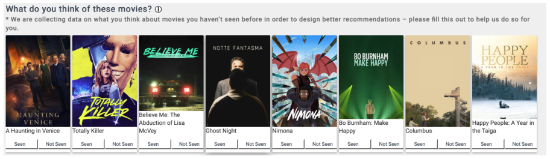

The MovieLens Beliefs Dataset: Collecting Pre-Choice Data for Online Recommender Systems (MovieLens 信念数据集：为在线推荐系统采集"选择前"数据)
- 会议/期刊: RecSys 2024
- 作者与机构: Guy Aridor (Northwestern Kellogg)、Duarte Gonçalves (UCL)、Ruoyan Kong / Daniel Kluver / Joseph A. Konstan (University of Minnesota, GroupLens)
- 推荐链路定位: 数据采集与离线评测基准（服务于召回/重排的价值评估与反事实分析，不改变线上排序逻辑）
- 研究方向: 去偏公平、可信隐私与工业架构 / 用户选择建模与推荐因果效应评估
- 论文原文: https://arxiv.org/abs/2405.11053v3
- 开源代码: 暂未开源（数据集发布于 https://grouplens.org/datasets/movielens/ml_belief_2024/）
TL;DR (1分钟核心速览)
传统推荐只建模"用户对已消费物品的评分 \(u_{i,j}\)"，而真正决定推荐价值的是"推荐如何改变用户对未体验物品的信念\(p_i\)"。本文给出一个可直接部署于线上平台的信念采集流程（分月构造候选集\(\mathcal{M}_t\) + 按推荐位分桶采样），在 MovieLens 上线 15 个月，产出 3,199 用户、28,457 条信念、7,518 部影片并附 172 万条历史评分与完整推荐曝光日志；同时诚实量化了两大缺陷——响应率中位数仅 0.031、推荐-信念重叠率仅 5.9%。
Background & Motivation (背景与核心矛盾)
- 主流范式: 推荐系统以拟合历史评分为目标，衍生出 serendipity、novelty、calibration 等辅助准则，但都未显式建模"用户选择问题"与"推荐起作用的中介机制"。
- 前人局限: (i) 信念数据不是平台使用的自然副产品，必须主动问，而问卷式采集（如 [3] 的独立 survey）长期执行会带来严重自我选择；(ii) 评分缺失非随机，平台只能看到"看过的人怎么想"，无法区分"因不确定而不看"与"知道不喜欢而不看"。
- 核心洞察 (Key Insight): 信念 \(p_i\) 是选择的先行预测变量，且 [3] 的 MovieLens 实验已证实"推荐对信念有因果效应、信念可预测消费"——因此只要把问信念嵌进日常交互，就能在低打扰下累积高价值反事实数据。
- 本文切入点: 用极简经济学选择模型反推"该采集哪些变化"，再设计一套可在任意在线平台复用的采样算子。
Method (核心方法设计)
1. 整体框架 (Overall Architecture)
论文的"方法"是数据生成过程（DGP）而非模型：先以期望效用模型刻画推荐如何通过后验信念改变选择，由此推出三项数据需求（刻画全空间先验信念、信念→消费映射、推荐→信念漂移）；再据此设计两层采样——月度全站共享候选集 \(\mathcal{M}_t\)（保证产品空间覆盖、可外推），日度个体级呈现集\(B_i^t\)（保证与推荐位重叠、可识别因果）；最后把呈现集以"首页第二行"形式嵌入 MovieLens，用户对未见影片打"预期评分 + 确定性"并写入日志。
flowchart TD
A["经济学选择模型<br/>推导三项数据需求"] --> B["月度候选集 M_t<br/>5 类准则 × 18 类型配额"]
B --> C["个体呈现集 B_i^t<br/>3+4+1 分桶采样"]
C --> D["首页第二行非侵入式问询<br/>isSeen / 预期评分 / 确定性"]
D --> E["信念库 + 评分库 + 推荐曝光日志"]
E --> F["全空间信念外推 / 推荐效应估计 / 消费预测"]2. 关键设计拆解 (Key Designs)
- 经济学选择模型（定义"值得采集什么"）：将推荐的价值从"预测准确"改写为"信念偏移"，把 serendipity 形式化为"用户事前不期待、事后却喜欢"的信息。选择算子为 \(c_i^{\text{NREC}}=\arg\max_n \mathbb{E}_{p_i}[u_i(x_{i,n})]\)，\(c_i^{\text{REC}}(r_{i,t})=\arg\max_n \mathbb{E}_{p_i}[u_i(x_{i,n})\mid r_{i,t}]\)，平台目标是\(r_{i,t}^{\text{OPT}}=\arg\max_{r_{i,t}} u_i^{*,\text{REC}}(r_{i,t})\)。直觉：若\(c_i^{\text{NREC}}=c_i^{\text{REC}}\)，则推荐对福利零贡献——这直接解释了 [14]"最准的推荐未必最有用"。
- 候选集 \(\mathcal{M}_t\)的类型配额采样（解决产品空间覆盖）：若纯随机抽片，长尾与热门都无法稳定覆盖、月度新片也抽不到。对每个类型\(g\)令\(s_g=|\mathcal{M}_g|/|\mathcal{M}|\)，按\(\lceil s_g\cdot k y\rceil\)配额分配五类准则——全期热度\(50y\)、评分最高\(25y\)、近期热度\(10y\)、趋势新片\(10y\)、纯随机\(5y\)，合计\(|\mathcal{M}_t|\approx 100y\)（初始\(y=100\)，2023 年 7 月按实测响应率下调至\(y=11\)）。这样既保留随机成分（小众片非零概率），又显式跟踪片库漂移。
- 个体呈现集 \(B_i^t\)的三段式采样与训练/推理开销：仅在用户未评分集合\(\mathcal{M}_i^t\)内采样，且每条请求固定 8 部：3 部均匀随机（广覆盖）、4 部从推荐 top-\(n\)（\(n=100\)）中随机（制造"推荐位 × 信念"交叉变化）、1 部最新上映（捕捉时序）。追加"3 个月内被问过 2 次则跳过"的去重复约束，避免重复打扰。无模型训练、无负采样、无推理开销，单次请求仅 8 个条目的读写，工程成本可忽略；采集侧唯一代价是首页一次额外渲染。

Experimental Setup & Evaluation Protocol (实验设置与评估协议)
- 数据集与预处理: 本文本身产出数据集，无 5-core 过滤、无评分阈值裁剪，保留全部原始请求日志（含未响应）以支持选择偏差分析。
| 数据集 | #Users | #Items | #Interactions | 稀疏度 | 特征/场景说明 |
|---|---|---|---|---|---|
| Beliefs（本文） | 3,199 | 7,518 | 28,457 | 0.118% | 预期评分 0.5–5（步长 0.5）+ 确定性 1–5 |
| Elicitation Log（请求） | 22,381 | 7,518 | 3,004,020 | — | 含 19,182 名从未响应用户，可测选择偏差 |
| Ratings（附赠） | 3,199 | 未披露 | 1,723,753 | — | 用户全历史评分，规模与 ML-1M 相当 |
- 数据划分与防穿越: 不设训练/测试划分；时间为线上自然流式采集（2023-03 至 2024-05），信念记录与推荐曝光均带时间戳，可在离线实验中自行按全局时间戳切分。
- 排名评测协议: 本文不做 Top-N 排名评测，亦无 Full-Ranking / Sampled Ranking 之分；其定位是提供可支撑排名评测（尤其 serendipity、反事实效用）的原始标注层。
- 对比基线与超参设置: 无 SOTA 基线对比；"超参"仅有候选集规模 \(y\)（\(100\to11\)）、呈现集配比\(3/4/1\)、推荐池\(n=100\)、\(recent\_threshold=6\)月、\(num\_rating\_threshold=100\)；显著性统一采用回归\(p\)值（\(p<0.001\)/\(p<0.05\)）。
Key Experimental Results (实验关键数据)
1. 主实验对比 (Main Results)
原文不含 SOTA 主实验表（数据集论文），故以内部一致性复现实验（对照 [3] 的问卷式采集结论）代替，检验信念数据是否"真"：
| 检验目标 | 因变量 | 自变量 | 系数 | 显著性 | 结论 |
|---|---|---|---|---|---|
| 确定性是否随热度上升 | userCertainty | \(\log\)(#ratings) | −0.011 | \(p<0.001\) | 热门片更"心里有数" |
| 信念是否驱动消费 | 是否观看 | 预期质量 | 0.028 | \(p<0.001\) | 预期越喜欢越看 |
| 不确定性抑制消费 | 是否观看 | userCertainty | −0.134 | \(p<0.001\) | 越不确定越不碰 |
| 影片级选择偏差 | 响应率 | 流行度 | −0.0002 | \(p>0.1\) | 无显著影片级选择 |
| 影片级选择偏差 | 响应率 | 评分方差 | 0.0001 | \(p>0.1\) | \(R^2\approx 0\) |
2. 消融实验 (Ablation Study)
无神经网络组件可消融，改以采集流程诊断表替代（等价于"去掉某设计后数据会损失什么"）：
| 流程设计 / 数据维度 | 观测值 | 缺失后果（归因） |
|---|---|---|
| 用户级响应率（均值/中位数） | 0.078 / 0.031 | 若改为独立问卷，选择偏差会进一步放大 |
| 人均信念条数 | 8.52 | 稠密度过低，须靠 CF/内容外推补全 |
| 请求-推荐重叠率（均值用户） | 5.9% | 因果识别功效弱，是三项挑战中最弱项 |
| 已记录信念落入推荐位比例 | 9.5% | 可做小样本推荐-信念因果分析 |
| 每月候选取样规模 \(y\) | \(100\to11\) | 覆盖 vs 密度的权衡被实测响应率强行拉低 |
3. 关键实验发现 (Key Findings)
- "问信念"比"等评分"贵得多但可行：300 万次请求只换回 28,457 条信念（整体响应率约 0.95%，用户级中位数 0.031），但影片级响应率与流行度、评分方差均无显著相关（\(p>0.1\)，\(R^2\approx0\)），说明主要偏差在用户层而非物品层——这为后续做用户加权去偏指明了方向。
- 信念确实携带评分之外的信息：预期质量对观看概率的系数 \(+0.028\)、确定性\(-0.134\)（均\(p<0.001\)），与独立问卷研究 [3] 定量一致，证明嵌入首页的非侵入式采集没有把数据"问坏"，可支撑"因不确定而不看"与"因不喜欢而不看"的区分。
- 推荐→信念的因果识别是当前瓶颈：仅 5.9% 的请求影片后来出现在推荐位、9.5% 的已记录信念落到推荐位，作者据此坦承第三项挑战（推荐如何移动信念）在本数据上功效不足，需扩大部署或按 [3] 的实验设计主动注入随机推荐。
Highlights & Limitations (亮点、对比与审稿批判)
- 与代表作对比 (vs. Prior Work): 相对 [3] 的独立问卷 survey，本文把采集嵌入首页第二行，牺牲单次信息量换取长期、低打扰、可持续的流式数据；相对经典 MovieLens 评分集 [10]，本文新增的是未消费物品的事前分布，可用于 serendipity/calibration 的度量（如"意外度 = 推荐相对先验信念的偏移"），这是评分矩阵在原理上无法提供的；相对常规缺失非随机（MNAR）去偏工作 [16,19]，本文不靠统计假设纠正偏差，而是直接补采缺失机制本身。
- 可迁移亮点: (i)"按类型配额 + 随机兜底"的月度候选集构造，可直接搬去做跨域/多场景实验的分层曝光池；(ii)"3 部随机 + 4 部出自推荐 top-\(n\) + 1 部新片"的分桶采样，是任何想在线上做推荐因果效应实验的通用模板（保证处理组与对照组都有支撑）。
- 审稿级局限批判: (i) 规模与代表性：仅 3,199 名响应者（22,381 人中），且 MovieLens 用户本身是高活跃度自选择人群，外推到工业级短视频/电商场景的证据链薄弱；(ii) 因果功效不足：5.9%/9.5% 的重叠率意味着几乎无法在观测数据上稳定估计"推荐→信念"效应，作者也未给出任何模拟实验或下游算法原型结果来证明该数据"能提升指标"，全文停在描述性统计，缺少端到端价值验证。
Rating (四维评分)
- 方法创新性 (Novelty): ⭐⭐⭐⭐ （把"选择前信念"这一经济学构念工程化为可部署的采样协议，问题定义本身新颖，但技术算子相对朴素）
- 评估协议与实验扎实度 (Protocol & Experiments): ⭐⭐⭐ （诚实披露响应率与覆盖率并做了复现性回归，但无 SOTA 对比、无下游任务实证、无显著性多重校正）
- 写作与数学规范度 (Clarity & Rigor): ⭐⭐⭐⭐ （经济学模型—数据需求—采样算子的推导链条清晰，符号统一，公式克制而无冗余）
- 工业落地与复现价值 (Industrial & Practical Value): ⭐⭐⭐⭐ （数据集与流程完全开源、零模型开销、可直接嵌入任意平台首页，但信念数据密度低、需依赖 CF 外推才能实用）